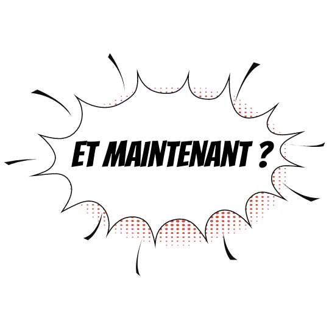
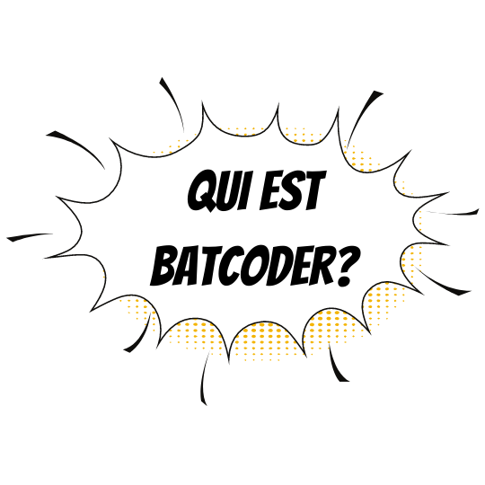
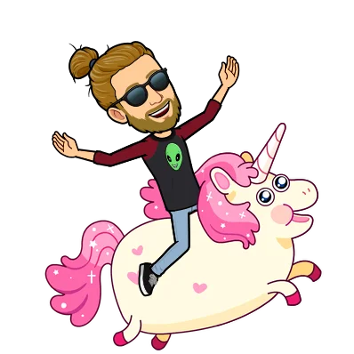

Qui suis-je ?
I'm Batcoder!
Sorti du système traditionnel de l'enseignement, je me suis tourné vers du travail alimentaire/saisonnier, l'occasion de prendre mon indépendance pour mieux rebondir.
Grâce à l'une de mes plus belle rencontre, j'ai eu l'opportunité de travailler dans un endroit magique : un cinema de quartier ! J'y ai découvert un univers vraiment passionnant : pouvoir discuter avec les clients, gérer un cinéma, de la projection à l'accueil avec une équipe aux petits oignons !
Il ne me manquait plus qu'une seule chose, la plus importante a mes yeux : la creation !
Par la suite, je me suis mis en quête d'un projet qui me ressemble et me donne envie d'avancer tous les jours afin de m'épanouir pleinement.
Je suis entré dans le monde magnifique des MOOC ! C'était le déclic nécessaire pour me rendre compte de ce que je voulais ... J'ai approfondi le développement web. Après tout je passais mon temps à jouer avec mes petits robots, bidouillais du code...
Pourquoi ne pas en faire mon métier ?
C'est avec cet objectif en tête que j'ai entrepris une formation de 5 mois à la Wild Code School d'Orléans en Java/SpringMVC, puis un stage de 5 mois chez ApsideTOP pour concrétiser ce nouvel objectif !
Elle m'a permis de me rendre compte de ce que je voulais ... Devenir Developpeur !
🎮 🕹️ Développeur web n'est qu'une étape. Depuis la fin de cette formation, je travaille sur mon temps libre d'autres compétences orientée sur le développement de jeux vidéo (UNITY, C#, .net et Blender) dans le but de réaliser mon rêve d'enfance: créer et travailler dans le monde du jeu Vidéo !
- 
- 
- 
Nerd Sûrement ! Weirdo ? Non, je ne pense pas ! Je dirais plutôt un Creatif !
Pourquoi BAtCODER ? Cela ne veut en aucun cas dire que je suis un super-héro / expert / dieu / pro du code... J'ai trouvé ce petit nom pour une simple raison :
- Le jour, je travaille sur des projets/missions que l'on me donne !
- Puis une fois la nuit tombée, je travaille sur mes projets (C#/.NET).
Je vous ferai des petites démo que vous pourrez suivre sur mon profil LinkedIn durant les prochains mois !